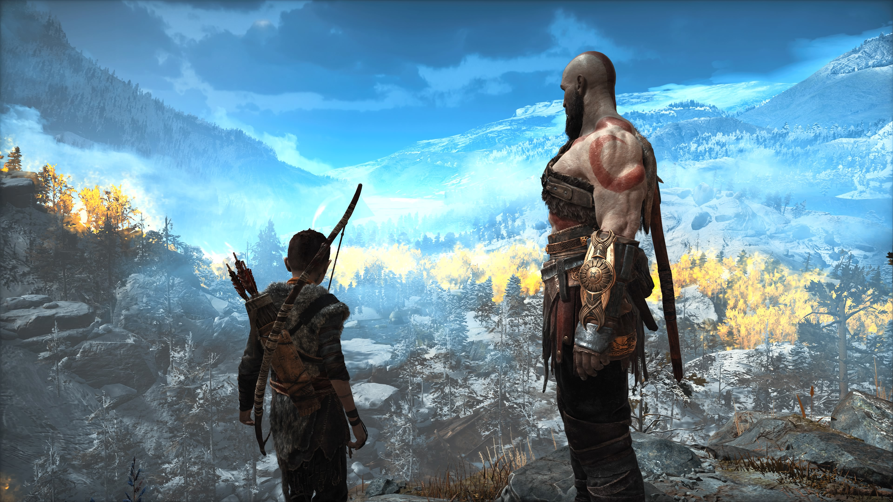
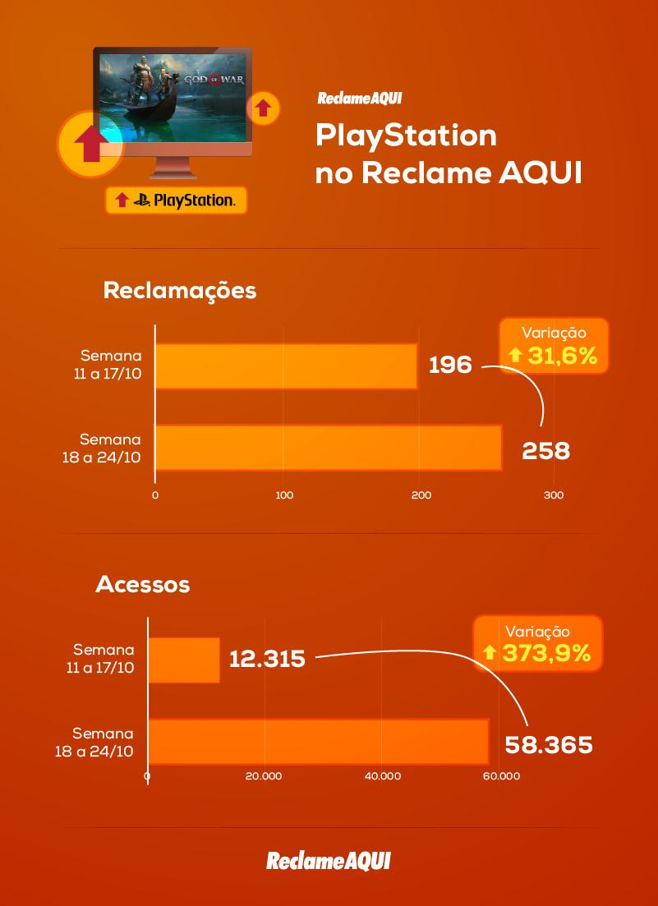

God of War: game ser lançado no PC aumenta em 370% acessos da PS
Brasil no Reclame Aqui (2021)

No último mês, a Sony anunciou o lançamento de God of War para PC, o que fez muitos
jogadores indignados com essa revelação registrarem suas queixas no Reclame Aqui.
Nesta semana, o próprio sistema do site revelou um aumento superior a 370% em número
de acessos na página do PlayStation Brasil Oficial.
De acordo com as informações divulgadas, o Instituto Reclame Aqui ficou de olho na evolução
das reclamações dos consumidores e o impacto desta ação na página do PlayStation Brasil Oficial
dentro do Reclame Aqui, e o resultado foi o total de 23,8 mil acessos em um único dia.
Para efeito de comparação, entre os dias 11 e 17 de outubro foram 196 reclamações e 12.315
acessos, e na semana seguinte (em que aconteceu o anúncio do game para computadores),
estes números saltaram para 258 reclamações e 58.365 acessos.

A comunidade se sentiu enganada
Em muitas das reclamações presentes no site, os usuários relatam ser uma espécie de traição
comprar um jogo com selo “Apenas no PlayStation” e ver o mesmo chegando a uma outra plataforma posteriormente.
“Comprei o jogo God of War, e no mesmo diz que é exclusivo de PS4, no entanto, o mesmo sairá para a Plataforma
do Steam. Utilizo a marca Playstation/Sony por causa dos seus jogos exclusivos, mas agora os jogos estão
deixando de serem exclusivos. Porém na caixa do jogo e trailers, a marca diz ser exclusivo. Me sinto muito
lesionado com isso, pois é uma propaganda enganosa!!!”, diz a mensagem de um morador de São Paulo no Reclame Aqui.
“Fiquei totalmente insatisfeito com essa notícia da ida do jogo God of War para PC. Eu já tinha um PC, e investi
no console da Sony justamente pelos jogos exclusivos. Me sinto totalmente [Editado pelo Reclame Aqui]
com essa propaganda totalmente enganosa, se soubesse que o jogo não ia ser exclusivo e ia chegar pra PC,
eu não teria comprado o console. Fico no aguardo pra saber quais medidas vocês iram tomar, e dependendo do caso,
entrarei com uma ação judicial contra a empresa.”, comentou outro jogador do Rio de Janeiro.
Com ou sem as reclamações, God of War será lançado para PC em janeiro de 2022, em data a ser confirmada pela Sony.
Segue abaixo um vídeo explicativo no minuto 6:15.